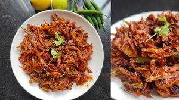

Sidhra Recipe

Ingredients:
- 1 cup rice flour
- 1/2 cup wheat flour
- 1/2 cup grated coconut
- 1/2 cup jaggery (or sugar)
- 1/4 cup ghee (clarified butter)
- 1/2 teaspoon cardamom powder
- 1/4 teaspoon nutmeg powder
- 1/4 teaspoon baking soda
- Water, as needed
Procedures:
- In a bowl, mix rice flour, wheat flour, grated coconut, jaggery, cardamom powder, nutmeg powder, and baking soda.
- Add ghee to the mixture and mix well.
- Add water gradually and knead into a soft dough.
- Divide the dough into small portions and shape them into cylindrical or round shapes.
- Steam the shaped dough in a steamer for about 15-20 minutes, or until cooked through.
- Remove the steamed sidhra from the steamer and let them cool slightly before serving.
- Sidhra can be served as a snack or dessert. Enjoy!
Comments: